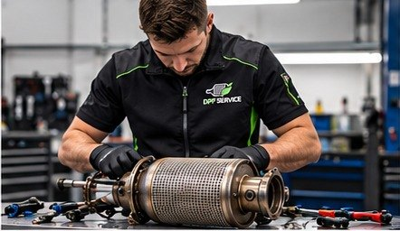
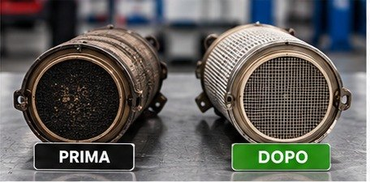

Régénération DPF/FAP pour moteurs diesel
Service professionnel dédié aux filtres à particules des moteurs diesel, après évaluation de l’aptitude du filtre.



Le service en termes simples.
Le filtre à particules diesel (FAP, DPF en anglais) retient les particules de suie produites par la combustion. Avec le temps, il se remplit : cela arrive surtout lors d’une utilisation principalement urbaine, à basse vitesse et sur de courts trajets, lorsque le filtre n’atteint pas les conditions nécessaires pour se nettoyer seul.
Signes et situations typiques
- Voyant moteur ou filtre à particules allumé
- Perte de puissance à l’accélération
- Forte odeur de gaz d’échappement au démarrage
- Expertise MFK à venir, ou valeur de particules supérieure à la limite
On commence toujours par une évaluation.
Contact
Vous nous décrivez le véhicule, les symptômes et le service qui vous intéresse, par téléphone, e-mail ou formulaire.
Évaluation
Nous vérifions si le service convient à votre filtre et à votre cas, avant de poursuivre.
Devis
Nous vous communiquons les coûts et les délais pour votre cas précis, avant que vous ne confirmiez l’intervention.
Ce que nous devons savoir.
- Marque, modèle, année et motorisation du véhicule
- Voyants allumés et symptômes constatés
- Si possible, depuis combien de temps ils se manifestent
La clarté avant tout.
Tous les filtres ne sont pas régénérables. Un filtre endommagé, par exemple fissuré ou avec des parties fondues, peut ne pas être récupérable : dans ce cas, nous vous le disons. Nous ne promettons ni récupération garantie ni compatibilité universelle, et nous ne pouvons pas garantir le résultat d’un contrôle officiel.
Les réponses les plus demandées.
Un filtre peut-il toujours être régénéré ?
Non. L’aptitude dépend de l’état du filtre et du cas précis : un filtre endommagé, par exemple fissuré, peut ne pas être régénérable. C’est pourquoi nous évaluons chaque cas avant de confirmer l’intervention.
Combien coûte le service et quels sont les délais ?
Cela dépend du type de filtre et du service demandé. Décrivez-nous le véhicule et le problème : nous vous répondons avec une évaluation et un devis dédiés.
Le voyant du filtre est allumé : que dois-je faire ?
Le voyant indique que le système a détecté une anomalie. Rouler longtemps avec un filtre encrassé peut aggraver la situation : mieux vaut le faire évaluer. Contactez-nous en décrivant les voyants et les symptômes.
La régénération du filtre me fera-t-elle réussir l’expertise (MFK) ?
Nous ne pouvons pas garantir le résultat d’un contrôle officiel. Depuis 2023, l’expertise périodique (MFK) vérifie le filtre des véhicules diesel par une mesure des particules : si un contrôle approche, contactez-nous pour une évaluation. Lire le guide.
Décarbonisation de l’ensemble moteur.
Pour les moteurs diesel, on peut aussi envisager la décarbonisation de l’ensemble moteur, c’est-à-dire le traitement des dépôts de calamine. La décision se prend au cas par cas, selon le véhicule et son état.
Diesel et essence : le même service vaut pour les deux types de moteur. Nous ne garantissons aucun résultat sur la consommation, les émissions ou les performances.
Parlons de votre cas
Décrivez-nous le véhicule et le problème : nous évaluons ensemble le service adapté.